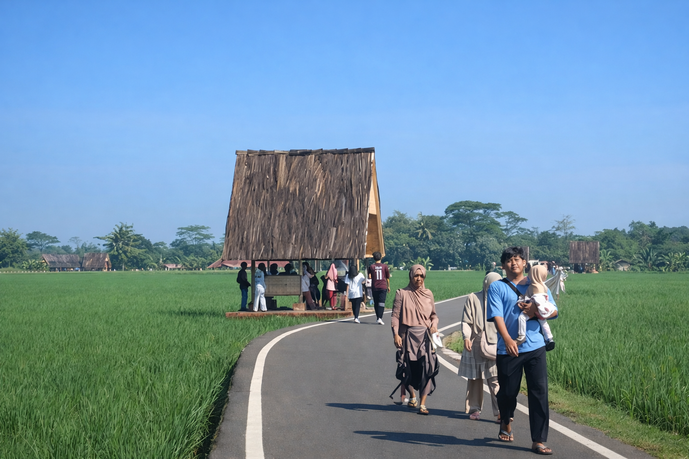
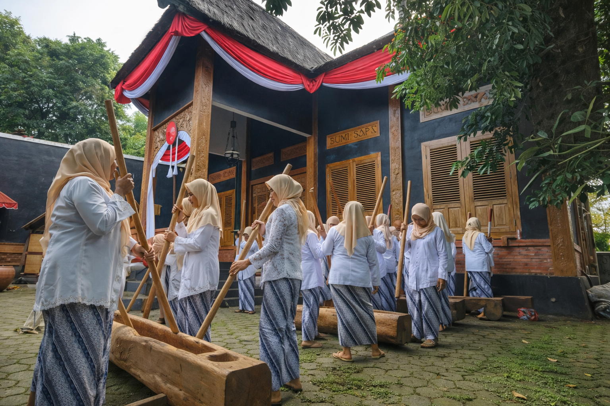
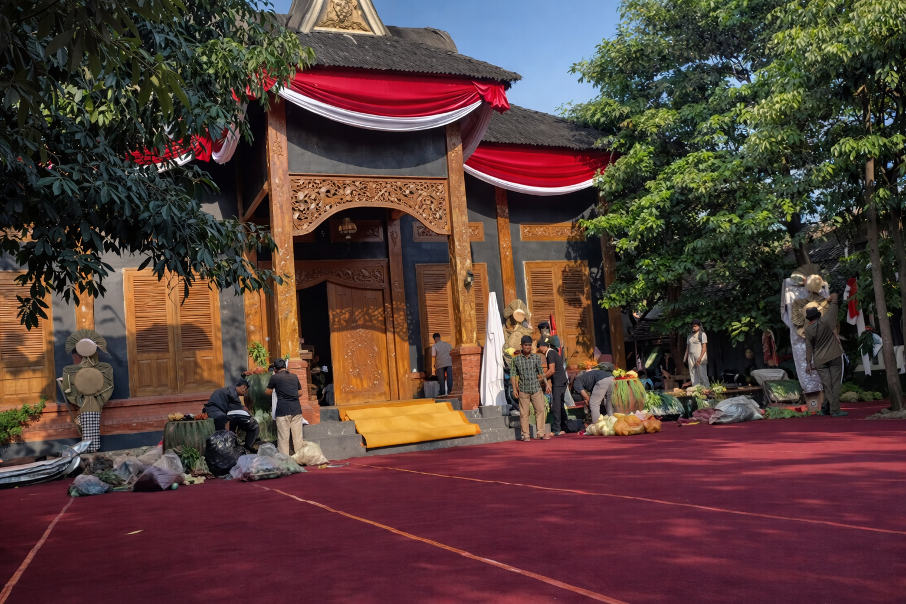

Lembur Pakuan adalah sebuah destinasi wisata edukasi budaya yang terletak di Desa Sukasari, Kecamatan Dawuan, Kabupaten Subang. Tempat ini merupakan kampung halaman dan proyek revitalisasi oleh Gubernur Jawa Barat Dedi Mulyadi, yang diinisiasi untuk melestarikan kearifan lokal masyarakat Sunda di tengah modernisasi yang pesat.
Pengunjung dapat merasakan suasana pedesaan yang asri dengan spot foto estetik, taman tematik, serta jalan santai di tengah sawah hijau. Di sini, nilai-nilai keramah-tamahan dan gotong royong sangat dijunjung tinggi, dengan berbagai aktivitas yang mengedukasi tentang kehidupan pedesaan Sunda.
Suasana jalan pagi di Lembur Pakuan

Suasana kegiatan Bersama Masyarakat di Lembur Pakuan

Spot Wisata Utama Bale Pamanah Rasa di Lembur Pakuan

Fasilitas & Kegiatan
Fasilitas Utama:
Area persawahan dengan spot foto estetik
Taman Bunisora (Gapura Khas Sunda) dan jalur santai yang nyaman
Saung khas Sunda untuk peristirahatan di Sawah
Area untuk kegiatan bersama masyarakat (Bale Pamanah Rasa
Eksplorasi Melalui Konten Visual
Simak keindahan Lembur Pakuan melalui konten visual berikut:
Eksplorasi Suasana Melalui Konten Audio
Simak keindahan Lembur Pakuan melalui konten audio berikut:
Dengarkan Musik Tradisional Sunda (Kecapi Suling ):